Work / 09 / Sustainable Packaging
Zerolys
ClientZerolys
CategorySustainable Packaging
ScopeWebsite + Social Launch
Year2025
The brief
What was
in the way
The product was ahead of the category. The digital presence didn't exist yet, which meant the brands and consumers most likely to care about it had no way to discover it.
What we did
The work
itself
We built the site and launched the social presence together, with a cinematic intro film carrying the mission in a category that usually explains itself with a paragraph of ingredient science.
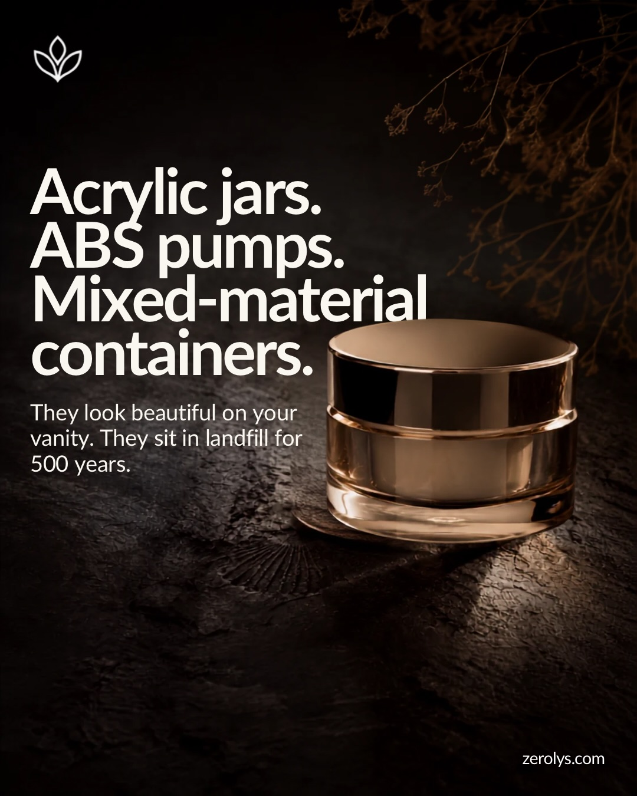


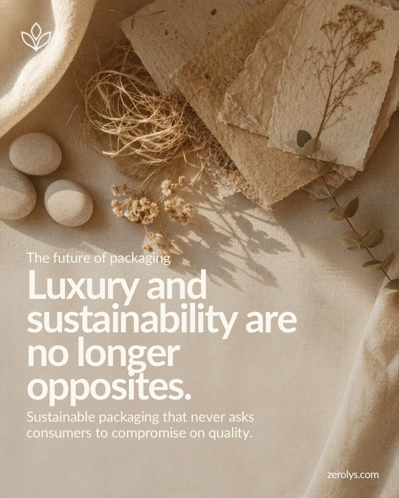
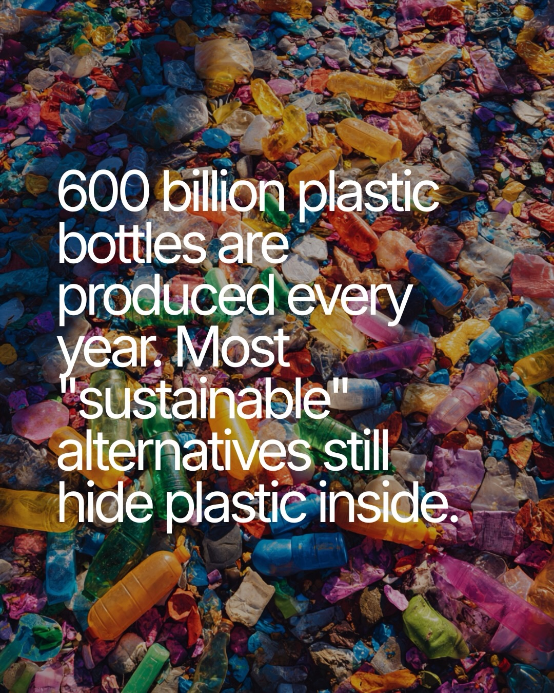
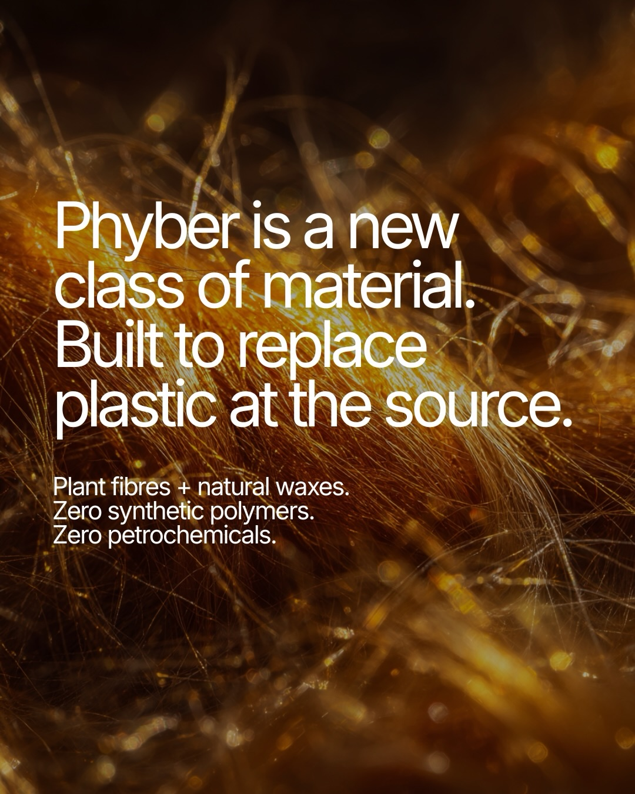

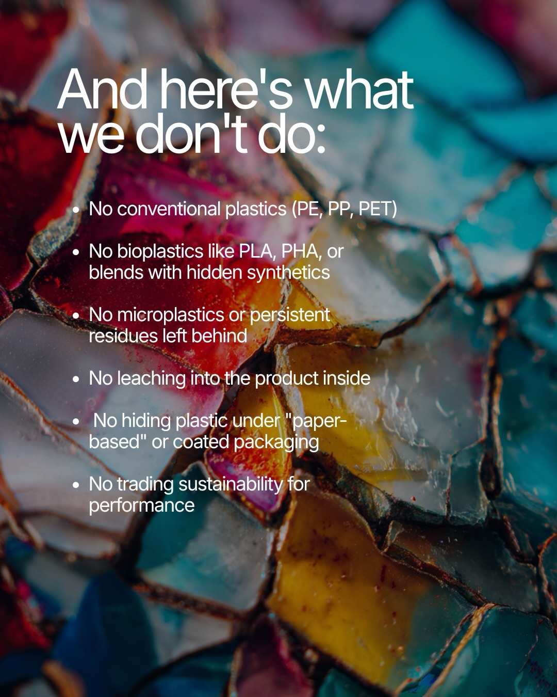
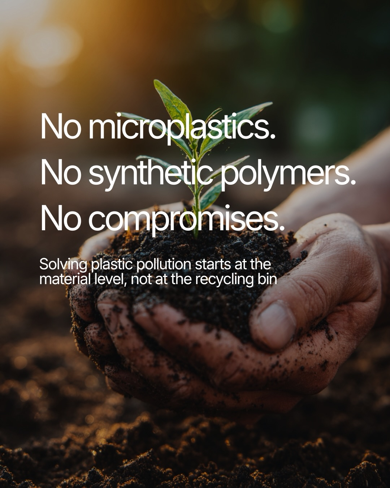


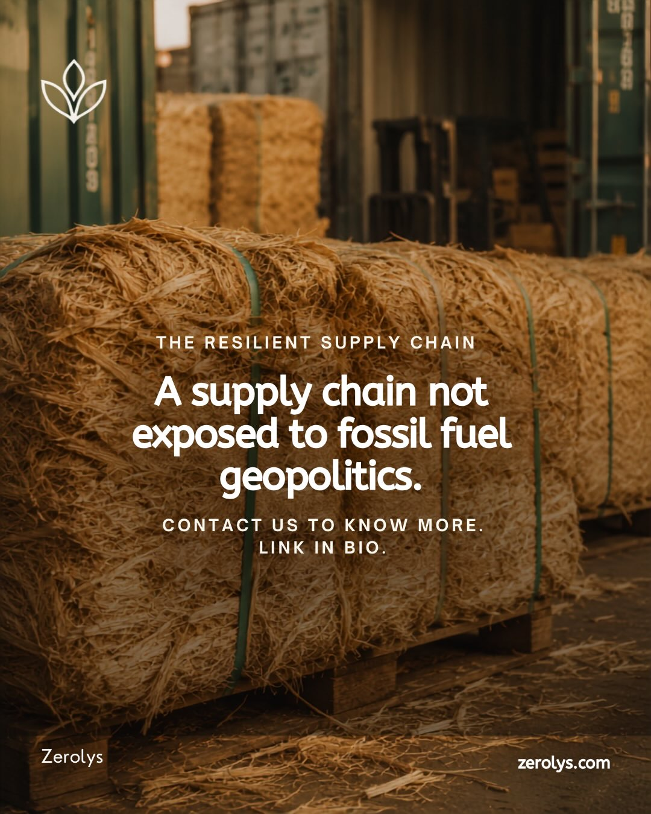

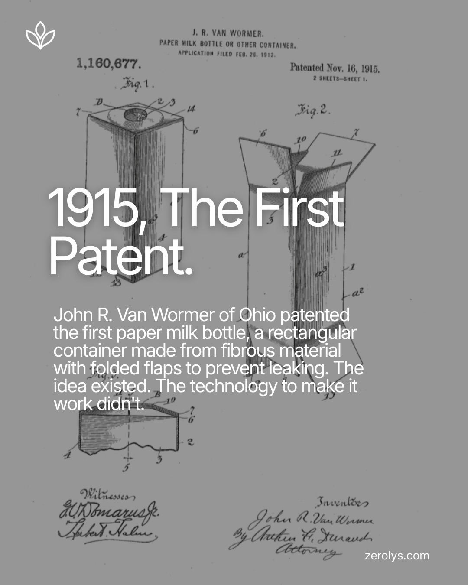
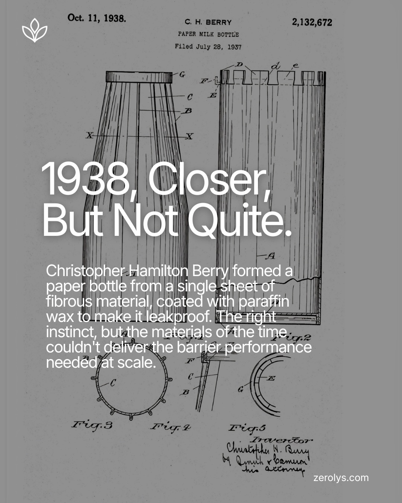
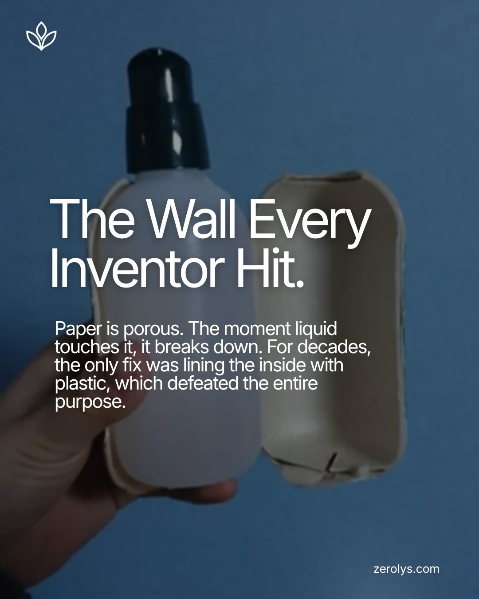
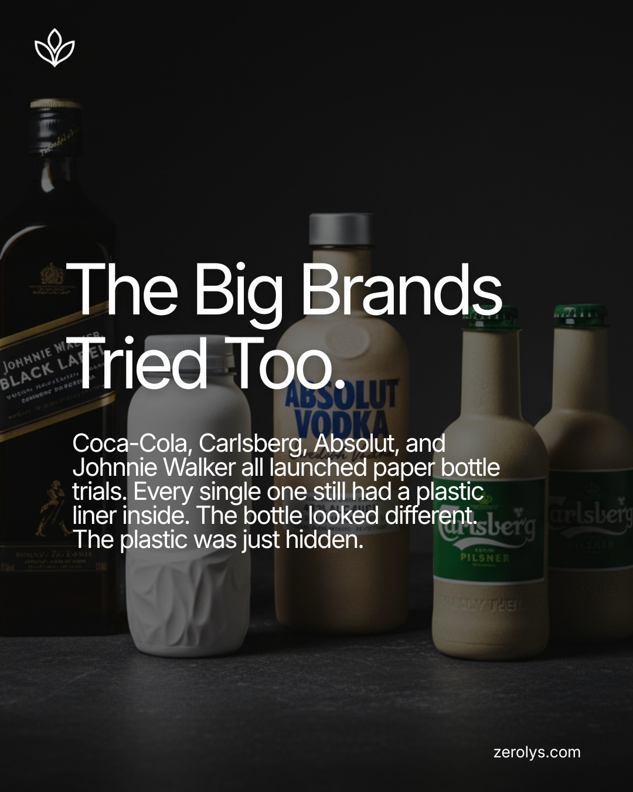

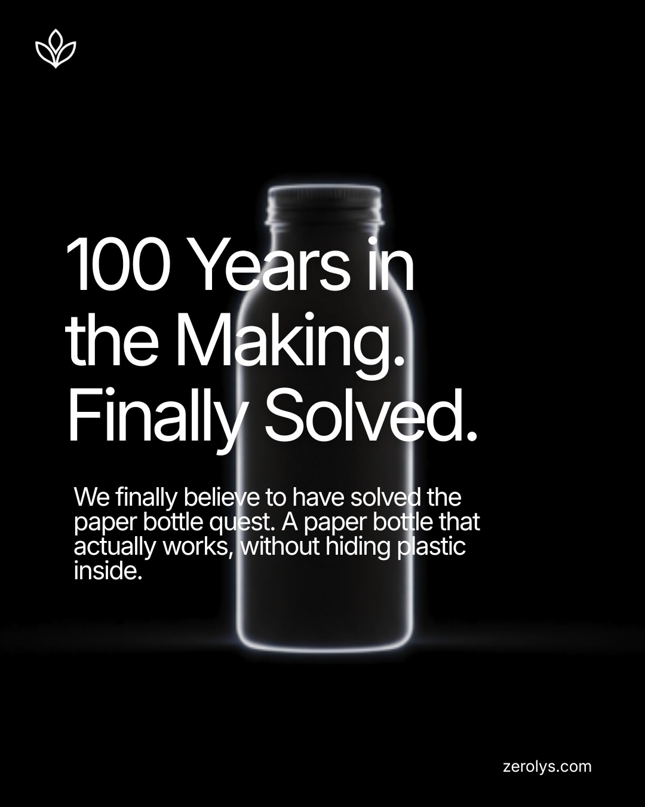

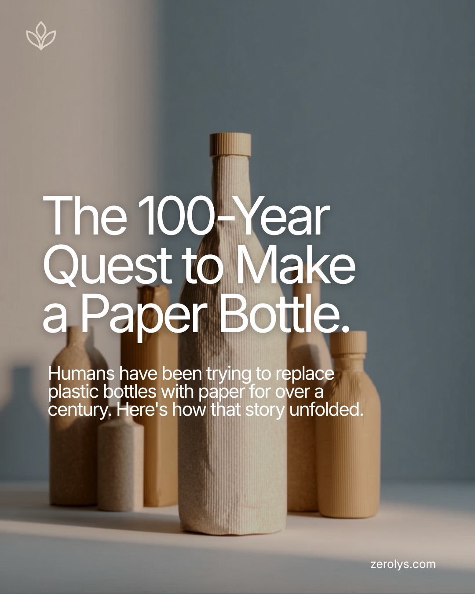
3.5X
Traffic growth
4.8%
Engagement rate
+62%
Form submissions